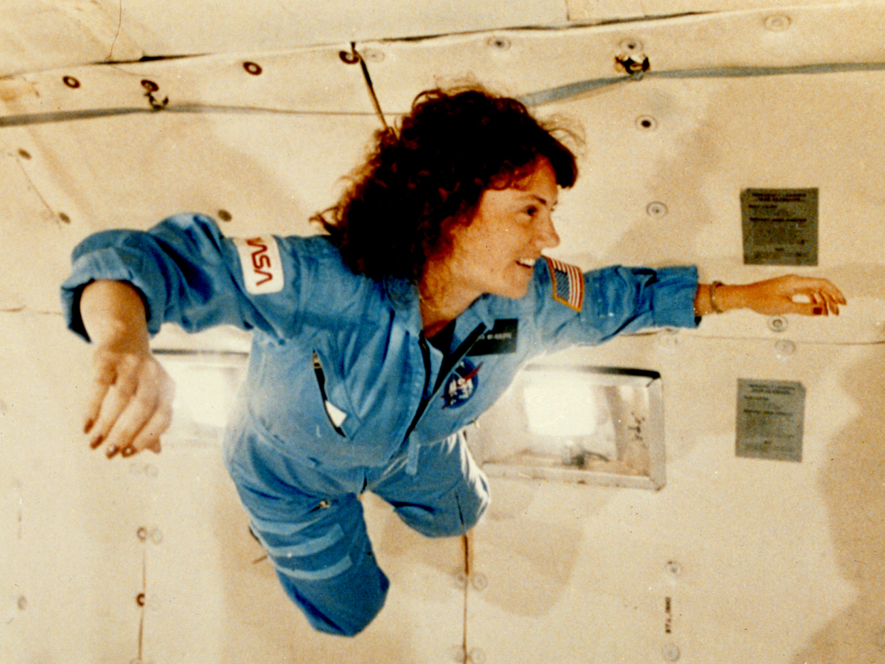

Out of Dry
21 Jun, 2013
One for the people that have never been by the italian seaside during what I call summer: if I just close my eyes, this is the projection in my brain of those moments. This is a lovely series from Nicolee, a californian photographer girl now based in Rome. She’s also been selected to shoot the new teaser for the new Instagram ‘video’ functionality. More lovely sets on cucinadigitale.com
David Ryle
28 May, 2013
Those photos taken in the Mojave Desert, are part of the ‘Desert Studies‘ project of David Ryle. Amazing colours and textures, if you have time pop on David website to see more amazing photos!

7-Eleven
30 Jan, 2013
Really liking this rebrand from BDV! The bold use of the shapes combined with a fresh (or retro) style palette, make me want to open a little store. The abstract line execution on the paper tissue is a ++
Microgravity Research
29 Oct, 2012
GRIN is a collection of over a thousand images of significant historical interest scanned at high-resolution in several sizes.
